Toetsenbord en Visuele weergave
Docenten
Deelnemers?
4 Dagen:
Web Content Accessibility Guidelines
4 Principes:
Per principe één of meerdere richtlijnen.
Per richtlijn meerdere succescriteria.
Een succescriterium legt uit hoe je kunt voldoen aan een richtlijn op een bepaald deelgebied.
Bijvoorbeeld:
Principe Waarneembaar
Richtlijn 1.2 Op tijd gebaseerde media
Succescriterium 1.2.2 Ondertitels voor doven en slechthorenden
3 niveaus in WCAG 2.2
Wettelijke eis: WCAG versie 2.1 niveau AA
(2026: WCAG 2.2 AA)
We gaan uit van 55 succescriteria voor WCAG 2.2 AA.
Hier hoort de volgende documentatie bij:
Vandaag gaan we bezig met de principes Waarneembaar en Bedienbaar.
Operable = Bedienbaar = Kan iedereen de website of app goed bedienen?
Wie kunnen geen muis gebruiken? Bijvoorbeeld:
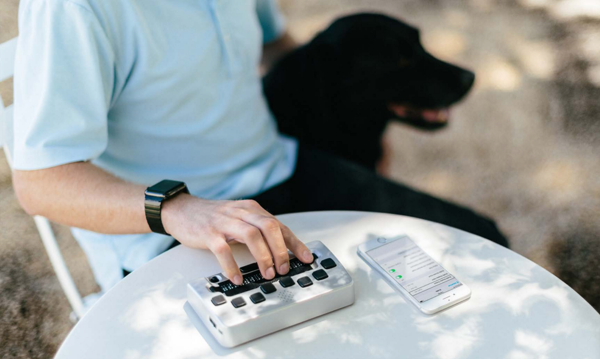
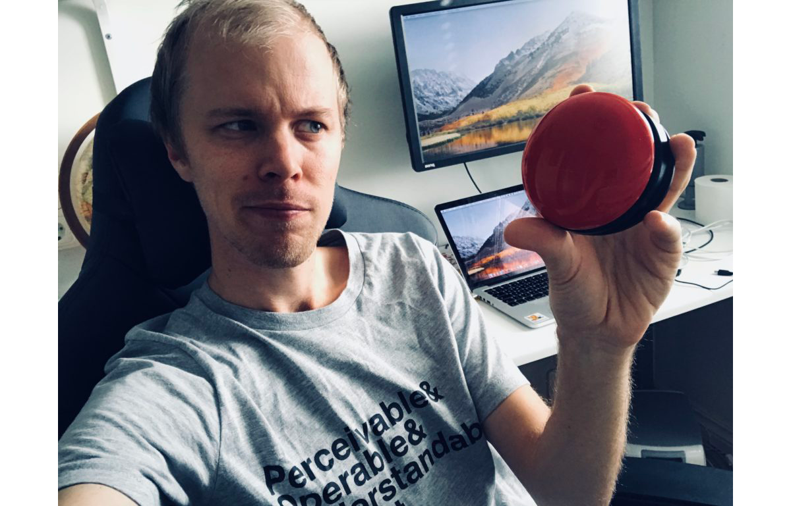
Muis: visueel
Toetsenbord: lineair
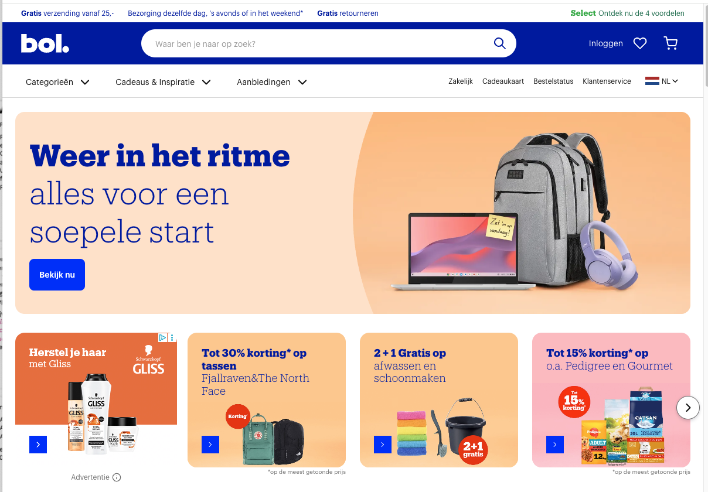
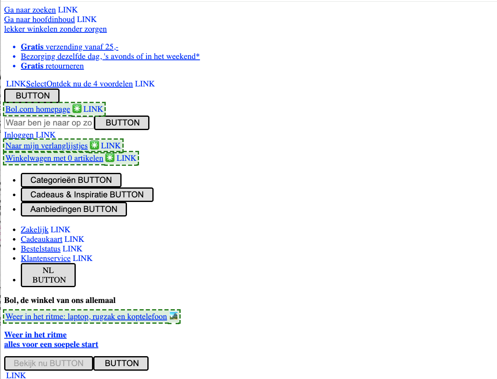
Criteria die we gaan behandelen onder Bedienbaar:
Zorg dat alle functionaliteit met een toetsenbord te bedienen is, bij voorkeur volgens een verwacht patroon.
De basis
Voorbeelden van focusbare elementen
Oefen zelf op deze pagina met elementen
WebAIM geeft advies over veelgebruikte patronen webaim.org/techniques/keyboard/#testing
Via APG kun je per pattern kijken wat het advies is, bijvoorbeeld bij een modal: w3.org/WAI/ARIA/apg/patterns/dialog-modal
Demo op internetacademy.nl
Als de toetsenbordfocus met de toetsenbordinterface verplaatst kan worden naar een component van de pagina, dan kan de focus ook met alleen de toetsenbordinterface weer van dat component weg worden bewogen.
Dit gaat bijvoorbeeld soms mis in popups waar je alleen weer uit kunt door met de muis buiten de popup te klikken. Zorg dat dit dan ook kan met bijvoorbeeld enter op een sluitknop en/of de Escape knop.
Belangrijk bij zoomsoftware waarvoor je de muis gebruikt om een deel van de pagina te vergroten.
Als er dan onbedoeld iets over de content heen valt, moet je
dit kunnen sluiten zonder je muis of focus te verplaatsen.
SC 1.4.13: Wanneer aanvullende content zichtbaar wordt en daarna weer verborgen, door het gebruik van hover met de aanwijzer of focus met het toetsenbord, gelden de volgende zaken (dus alle drie):
Bijvoorbeeld: submenu verschijnt op hover. Je moet over de items heen kunnen hoveren zonder dat het submenu verdwijnt. Deze verdwijnt pas als je het zelf actief sluit. Dit moet kunnen zonder de muis of focus te verplaatsen, dus bijvoorbeeld met de Escape knop.
Voorbeelden:
Goed: Submenu Tweede Kamer
Fout: Submenu Jumbo
Sneltoets: 1 karakter (letter, leesteken, cijfer, symbool)
Wanneer een sneltoets in content wordt geïmplementeerd, geldt ten minste één van de volgende zaken:
Voorkomen van onbedoelde activatie
Let op de regel van actief bij focus. De focus moet dan echt op dat specifieke component staan, dus bijvoorbeeld een knop of link. Als bijvoorbeeld de focus ergens anders in een videoplayer staat, is dat niet voldoende. Dan moeten deze sneltoetsen worden uitgeschakeld.
Voorbeeld: video op nu.nl
Er is een mechanisme beschikbaar om blokken content die op meerdere webpagina's worden herhaald te omzeilen.
Een goed mechanisme is een skiplink, maar dit is niet vereist om te voldoen. (Wel aanbevolen!)
Direct naar content, en/of overslaan van specifieke blokken links zoals extra menu’s of filters.
Demo skiplink op internetacademy.nl
Andere toegestane methoden:
NB: Handig voor screenreadergebruikers, maar skiplinks zijn het handigst voor (ziende) toetsenbordgebruikers zonder hulpsoftware.
Voorbeeld kit.nl
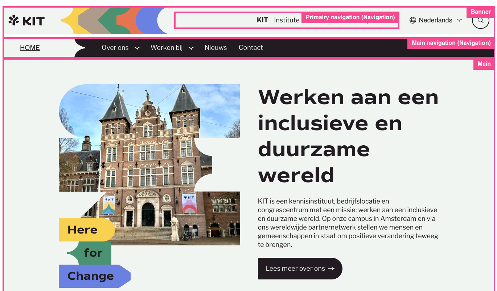
Demo rotor landmarks (VO+U)
Wanneer een toetsenbordgebruiker binnen de webpagina navigeert, bijvoorbeeld met de Tab-toets, moet de tabvolgorde logisch en voorspelbaar zijn.
Idealiter komt de volgorde overeen met de visuele volgorde, zodat het ook goed te volgen is voor ziende toetsenbordgebruikers en de focus niet alle kanten op springt.
Aandachtspunten
Zorg dat het goed zichtbaar is welk element de toetsenbordfocus heeft, wanneer je door de website navigeert met een toetsenbord of vergelijkbare bediening. Dit kan bijvoorbeeld door het gebruik van een focusring (outline).
Demo: otto.nl
Opdracht: doorloop de homepage van hema.nl met het toetsenbord. Let op de focus zichtbaarheid en de focus volgorde.
Tabvolgorde
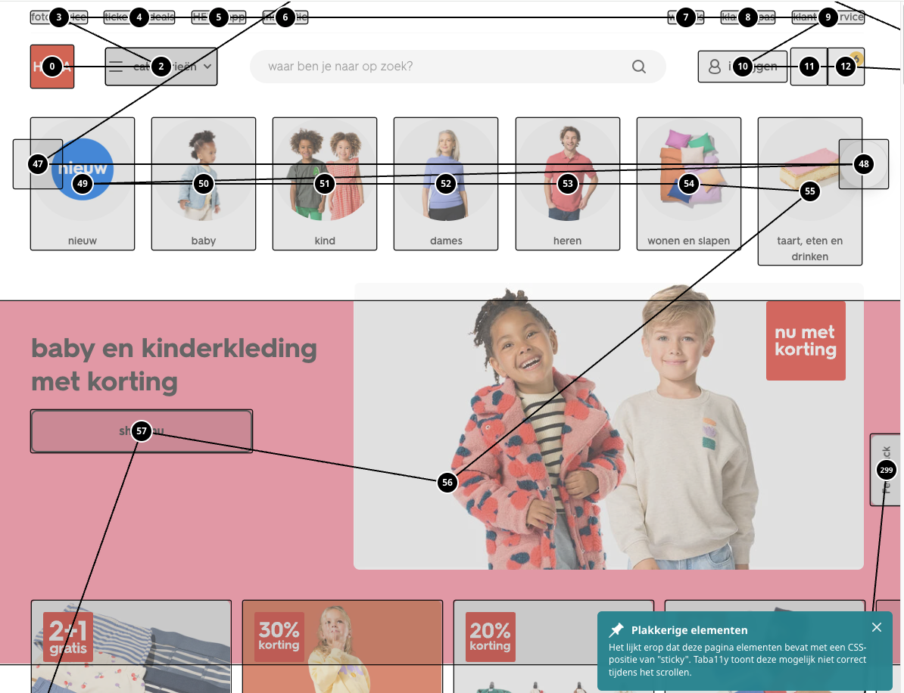
Tip: tabA11y browser extensieZorg ervoor dat een element dat de toetsenbordfocus heeft zichtbaar is en niet volledig bedekt is door andere inhoud.
Gaat vaak fout bij inzoomen en fixed headers/footers.
Opdracht: Ga naar volkskrant.nl, zoom in tot minimaal 200%. Is de focus overal nog zichtbaar?
Zorg dat de focusstijl voldoende zichtbaar is.
Voldoende dikke rand (minimaal 2 px) en voldoende contrast (minimaal 3:1).
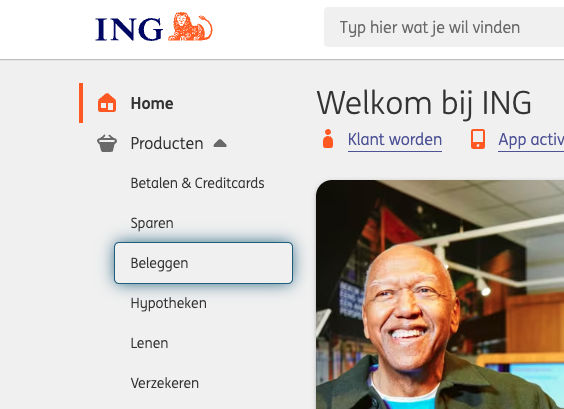
Bijvoorbeeld het slepen van inhoud binnen bepaalde kaders, het swipen van foto's of het vergroten van een kaart met twee vingers.
Zorg ervoor dat de gebruiker deze acties ook kan doen met één aanwijzer zoals een muis of een vinger zonder deze extra gebaren te hoeven maken.
Acties die werken met sleepbewegingen, waarbij de aanwijzer ingedrukt moet blijven terwijl je van de ene plek naar de andere plek sleept, hebben ook een manier om de handeling zonder sleepbeweging uit te voeren.
NB: Het gaat hier om de start en eindpunten, niet om het pad. Bij SC 2.5.1 Aanwijzergebaren gaat om het pad.
Zorg ervoor dat, als de gebruiker bijvoorbeeld een link of button indrukt met een aanwijzer zoals een muis of vinger, er de mogelijkheid is om actie te voorkomen of ongedaan te maken.
Voorkom onbedoelde activatie door ten minste één van de volgende voorwaarden:
Dus: Als je per ongeluk een item hebt aangeraakt (of besluit het toch niet te willen activeren), moet je de vinger of muis kunnen verplaatsen om activatie te voorkomen.
Dit geldt ook voor complexe interacties zoals sleepbewegingen.
Terugdraaien mag ook met een 'undo' knop.
Essentieel: bijv. keyboard emulation
Als de gebruiker een actie kan uitvoeren door een beweging te doen met het apparaat, dan moet er ook een manier zijn om die actie te doen zonder beweging. Voorbeeld: schudden om te updaten.
Zorg dat de functie ook kan worden uitgevoerd met een knop of link en dat de reactie op de beweging kan worden uitgezet.
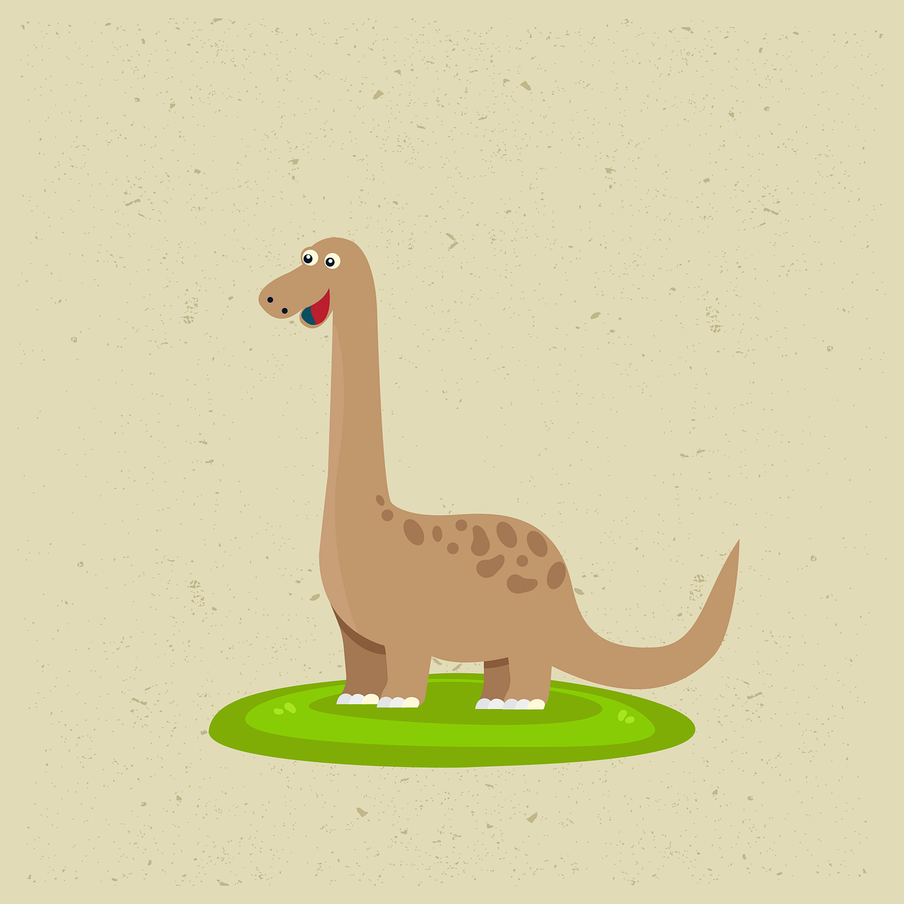
Perceivable = Waarneembaar = Kan iedereen het lezen en waarnemen?
Criteria die we vandaag gaan behandelen onder Waarneembaar:
Het contrast van de tekstkleur ten opzichte van de achtergrondkleur moet hoog genoeg zijn, zodat de tekst in het algemeen goed leesbaar is.
Opdracht: test het contrast op fd.nl
Tips voor tools:
Zorg voor voldoende kleurcontrast tussen de achtergrondkleur en de kleur van componenten die visueel betekenis hebben.
Interactieve elementen en grafische objecten
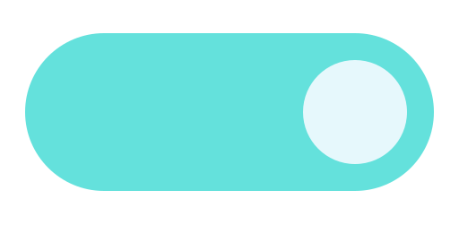
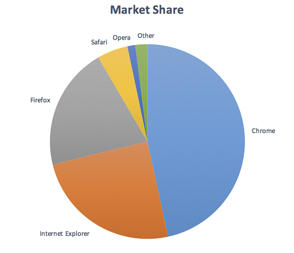
Opdracht:
Hoe toegankelijk is dit diagram?
Wat zou je aanpassen?
Criteria die te maken hebben met responsive bouwen
De gebruiker moet de tekst twee keer (200%) kunnen vergroten. Het gaat hierbij alleen om het vergroten van tekst.
Dit kan door in de browser of OS (bijv. Android) de tekstgrootte aan te passen tot 200%, of door (gehele) browser zoom.
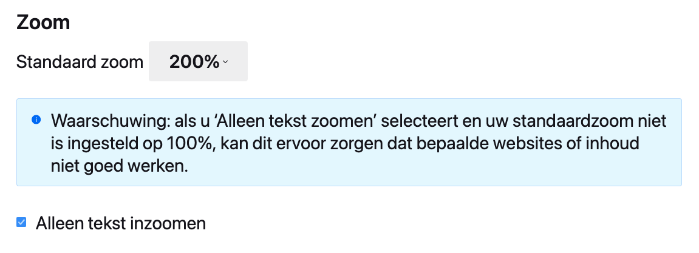
De gebruiker moet de webpagina tot 400% kunnen inzoomen zonder in 2 richtingen te hoeven scrollen. Het gaat hierbij om alle elementen van een webpagina.
Zorg ervoor dat een gebruiker het scherm niet fysiek hoeft te draaien om de inhoud goed te kunnen zien.
Je moet de content kunnen bekijken in zowel landschap-modus als in portret-modus.
Tekst kan op een aantal manieren aangepast worden door de gebruiker voor betere leesbaarheid, zoals regelafstand, letterafstand en spatiëring.
Voor al deze criteria geldt:
Dit mag WEL:
Let op bij:
Hoe te testen:
Zet de schermbreedte op 1280px en zoom in tot 400%.
Tip: Zet dit als vaste waarde(s) in de Web Developer Toolbar
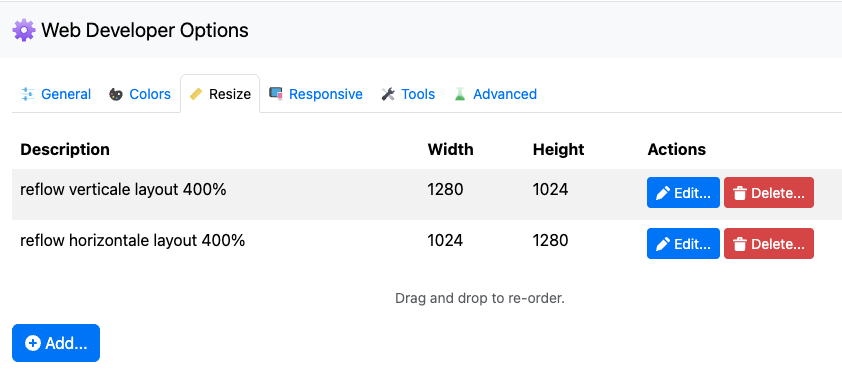
Ga de volgende stappen bij langs en controleer of alles beschikbaar en functioneel blijft:
Opdracht: test volkskrant.nl op de volgende manieren:
Test ook met het toetsenbord.
Blijft alles beschikbaar?
Zie je verschillen in Chrome en Firefox?
Richtlijn Tekstafstand:
Hiervoor kun je deze textspacing bookmarklet gebruiken.
Opdracht: test volkskrant.nl met aangepaste tekstafstanden.
Test dit ook met inzoomen.
Zorg ervoor dat de aanklikbare elementen zoals buttons, links en formuliervelden groot genoeg zijn om makkelijk aan te klikken met een muis of vinger. Hierbij geldt dat het aan te klikken gebied ten minste 24 bij 24 pixels groot is.
Zorg ervoor dat de aanklikbare elementen zoals buttons, links en formuliervelden groot genoeg zijn om makkelijk aan te klikken met een muis of vinger. Hierbij geldt dat het aan te klikken gebied ten minste 44 bij 44 pixels groot is.
Groter = Beter
Best practice
Testen met Target size bookmarklet
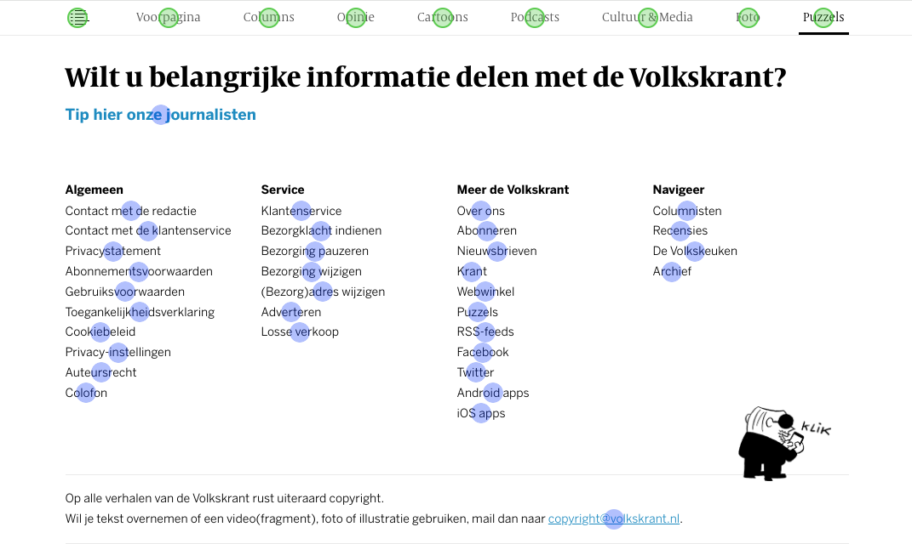
Opdracht: test het aanwijsgebied op een eigen gekozen website (waar je zelf aan werkt).
Ga naar Gelderland.nl, pagina Kaarten & Cijfers
Beoordeel de toetsenbordtoegankelijkheid en de visuele weergave
Let op de volgende punten: